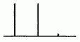
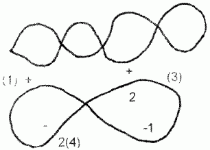
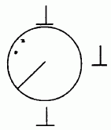

Беседа 3664 от 3877 · Беинса Дуно
Разумни и неразумни линии
Отче наш
Махар Бену Аба
Да изпеем "Аз мога да любя" с движение. (Изпяхме го с движение). Понятията ви на всички не са едни и същи. Любовта е движение напред от центъра, отвътре навън, от големия свят към малкия свят, а пък обичта – от малкия свят към големия, от периферията към центъра. Турете си ръцете на гърдите с длани към гърдите. Започнете песента "Аз мога да любя" – ръцете се отварят напред, длани надолу и китки по-далеч, отколкото разстоянието между рамената. "Добър да стана" – ръцете настрани и долу с китки надолу. "Аз мога да обичам" – ръцете се поставят на гърдите. "Силен да стана" – ръцете настрани. "Любовта" – ръцете напред с длани надолу. "И обичта" – ръцете на гърдите. "Ще ме научат" – ръцете настрани с длани надолу. "На Бога" – ръцете пред гърдите. "Слуга да стана" – ръцете настрани и долу. "На Бога" – това е движение навътре. "Слуга да стана" е към периферията. Слугуването е навън от къщи. Любовта към Бога е вкъщи. (Изпяхме няколко пъти песента с движения).
Сега във вас идеята за любовта каква е? Трябва да дадете нещо. Какво е движението, когато давате? Да кажем, изваждаш нещо от джоба и даваш, какво движение ще направиш? (Учителят направи плавно движение на ръцете, длани нагоре – отваряне на ръцете.) Вие правите движение напред на ръцете, но то е вземане. Вземането не е любов. Свободно движение напред. Вие искате да хванете нещо, да вземете. Туй е движението на любовта – ръцете напред, отваряне напред, подобно, когато каним някого. Пеенето трябва да съответства на движението. Има художество в движението. Казваш: Аз това мога да дам – (Учителят прави движение с ръцете, като че дава, ръцете напред отворени, с длани нагоре). Естествено правете движението, вие се занимаваше какъв ефект ще произведе. Просто искаш да изразиш едно свое чувство. Вие правите движението, когато сте сами, докато вие сами станете доволни. Правиш едно движение, но ти сам да си доволен. Вие като правите движенията, се събужда едно чувство на осторожност, дали е право или не. Влиза умът ви в стълкновение, и движението не става правилно. Правите едно движение, в което страхът влиза. После, има една неувереност, дали е това или не. Всякога, когато човек е неуверен, трепери ръката му. Когато пише и е неуверен, писмото е с криви линии; когато е уверен, линията е права. Като пише и мисли: може да е тъй или може да не е, линията е крива.



Допуснете, че едно тяло става по-голямо и по-малко. Всъщност, то е една илюзия. Допуснете, че слънцето, което е на 92 милиона мили, има такава форма, толкоз е голямо. Вярно ли е, че слънцето е толкоз голямо? Ако се приближите, да кажем на половината – на 45 милиона мили, колко ще бъде по-голямо слънцето? Пропорционално ще бъде по-голямо на приближаването. Телата стават големи: или ние се приближаваме към тях, или те се приближават към нас. Когато телата стават малки, или ние се отдалечаваме от тях, или те се отдалечават от нас. Има тела, които са нито малки, нито големи. В даден случай някое тяло е голямо, но то не е станало голямо в даден случай. Или то е малко, то не е станало малко. То е перспективно. По отношение на приближаването и по отношение на отдалечаването едно тяло се вижда голямо или се вижда малко. За да нямате илюзия. Казвате: Той е малък. Малък е станал, понеже се е отдалечил. Казва: Голям човек. Приближил се е към вас. Вие сте станали големи, към вас се приближават. Вие сте станали малки, от вас се отдалечават. Когато една идея се отдалечава, става малка, когато се приближава, става голяма. Когато един човек се проявява, държи ви в съзнанието си, той голям става. Когато вие го забравите, той малък става. Вие забравяте, малки ставате. Забравянето е отдалечаване, припомнянето е приближаване. Да си припомниш нещо, значи да се приближиш. Да забравиш нещо, значи да се отдалечиш. Някой път не знаете защо забравяте. Защото сте се отдалечили. Всяко едно тяло, от което се отдалечавате, праща ви малко светлина, вие го забравяте. Което ви праща повече светлина, вие си припомняте за него. Сега идеята каква е? Казва: Да не го забравиш. Какво трябва да правиш? Трябва да се приближиш. Но трябва да знаеш докъде. Всяко движение не става по права линия. Когато линията се вижда, че е много дълга, е права, този кръг е много голям. Той е толкоз голям, че кривата линия се вижда права. То е пак една илюзия. Казва: Приближил се по права линия. Но правата линия е пак крива. Този кръг е толкоз голям, че кривата се вижда права. Правият човек е, който върви в една посока. Правата към вас иде. Да кажем, някой певец дава концерт. Има ли много идеално в един концерт? В един концерт има доста материални работи. Той пее, но плаща се заради това. Събрали са се хиляда души, платили са му доста скъпо и заради тия пари той пее. Но не на вас пее, на парите пее. Той пее на парите ви, и като пее на вашите пари, вие се радвате. Защото ако вие не бяхте платили, не можехте да влезете. Платили сте и сега се радвате, че сте влезли. Вие се радвате и на кого се радвате? Вие още на певеца не се радвате. Най-първо се радвате на парите, които са ви пуснали в салона. Вие нямате ясна представа. Вие казвате, че на певеца се радвате, но вие не се радвате на певеца и певецът не се радва на вас. Той се радва на парите. Ако не бяхте платили, той не щеше да даде концерт. Вие за да влезете, ще дадете 45 лева, а той за да влезе в салона, ще му дадат 20-30 хиляди лева. Той се радва за 20-те хиляди лева, вие се радвате на неговата радост, той се радва на парите. И той се радва, че вие сте влезли. Ако вие не влезете в салона, той не може да пее. Вие влизате, хиляда души съставяте обект той да се радва. Ако вие не бяхте влезли, тогава тия пари не щяха да дойдат. Той като ви вижда, благодари. Казва: Много ви благодаря, че вие платихте заради мене. То беше голямо препятствие. Вие всички трябваше да платите за неговото пеене и той влиза в салона. Вие нямате ясна представа, мислите, той трябва за вас да пее. Много хубаво пее той, но пее човекът за парите. Туй вие не го съзнавате, вие мислите, че този певец е много идеален. Тези неща не са лоши сами по себе си. После се образуват други връзки, които са второстепенни. Този певец след като е пял, ще дойде да се запознае с вас. Вие го ангажирате втори път да дойде и да ви даде още един концерт. Вие го ангажирате, но все трябва да дадете нещо. Не може да те обичат хората, ако не обичаш нещо. Какво трябва да дадеш? Или трябва да платиш със своята мисъл, която е реална, или със своите чувства, или трябва да платиш със своята воля, която е реална. От три свята трябва да дадеш. Представете си, че влиза един да ви пее, но след като ви е пял той, и вие ще му пеете. Ще бъде ли той доволен? Представете си, че му дадете салон свободен да пее без пари. Вие влизате в салона без пари, нищо не плащате и той нищо не плаща. Той ще попее и вие ще му попеете. Кой ще бъде по-доволен? Вие ще бъдете по-доволен от певеца, а певецът ще бъде по-недоволен от вас. Той трябва да чака хиляда души да му пеят. Той втори път няма да се яви да ви пее. Певецът като пее, и публиката пее. Той пее една песен "Аз мога да любя" и вие пеете "Аз мога да любя". Слушайте, казвам (Учителят пее): "Много добре пееш, много добре пееш, много добре пееш". Той пее "Аз мога да любя", нему му е приятно, че го похвалвам. Вие трябва да пеете: "Много добре пееш." Казва: Дълга песен "много добре пееш, много добре пееш". Ние сме доволни от пеенето. Стоплиха се сърцата ни. "Много добре пееш". Светлина дойде в ума ни. Така се въодушеви, че светлина хвърли и топлина хвърли. Казвате: Почакай, ние ще ти попеем, как се пее. Ще го приложите. Иде някой просяк със своето канче. За да нахраниш този с канчето, какво трябва да направиш? Ще напълниш чашата му. Отношение има между хората. Добрият живот в света зависи от ония хармонични движения. Човек трябва да разбира в какво седи животът. Ако един човек показва любов към тебе и ти не оценяваш любовта му? Ако един човек има обич към тебе и ти не оценяваш обичта му, тогава има едно неразбирателство. Ако не можеш да оцениш една човешка мисъл, ако не можеш да оцениш едно човешко чувство и постъпка, тогава нещата стават неразбрани. И в природата е същото. Доволен си, понеже оценяваш постъпките на природата. Не оценяваш постъпките на природата, целия ден си недоволен. Като станеш сутрин и не оценяваш, целия ден си недоволен и ще бъдеш неразположен. Оценяваш и ще бъдеш доволен. Станеш сутрин, времето облачно, ветровито и целия ден си неразположен. Вие ставате сутрин и сте неразположени. Защо сте неразположени? Материал ви е даден. Вие сте неразположен, защото не искате да работите. След като е даден материал, имаш разположение, благодарен си на онова, което ти е дадено. Всяка сутрин човек като стане, ако той има желание, онова, което му е дадено да го обработи, той е доволен и природата е доволна. Щом станеш и кажеш: Днес не искам да работя, веднага се зароди една дисхармония.
Я някой от вас да изпее "Аз мога да любя", но със съдържание. Тъй да изпеете "Аз мога да любя", че даваш, "Аз мога да обичам", че вземаш. Образно пеене. – Я, Пеньо ти изпей. (Пеньо изпя.) Някой не дава щедро. Когато пеете, щедро да пеете.(Учителят без да пее гласно направи движенията, както когато пее песента "Аз мога да любя".) Един мълчалив певец. Аз може да ви изпея една песен с движение и да ме разберете. Някой път може да направя движенията обратно на онова, което означават. Аз може да ви изпея една песен, ако това искам да ви го кажа с движения. (Учителят придвижва ръката към устата и допира ръката до устните), в която да ме разберете – ръката напред протегната. Вие може да ми дадете вълна, аз може да я обработя, да ви дам един плат, вие да си направите една дреха, да се облечете, на мене да ми платите за работата. Какво движение може да направите, за да изразите горното? Вие може да ми дадете вълна – движения на ръката към тялото – аз може да я обработя, да ви дам плат – движение на ръката навън от тялото, – вие може да ми платите – движение на ръката в джоба. Какво е естественото движение? И песента може да се пее по същия начин. Вие може да ми дадете десет оки вълна – движение на ръката към тялото и поставена на гърдите. Аз ще я обработя и ще ви я дам – движение на ръката напред. Но парите ще ми дадете и аз ще ги туря в джоба – движение на ръката към джоба. Кое е изразителното? Пеете "до" (Учителят пее "до") – кляка, ръцете отстрани на тялото. "Ре" – движение на ръцете напред. "До" е като слизаш надолу. Ще пееш, ще посаждаш. По права линия е движение. Най-първо слизаш надолу и възлизаш нагоре, то е " до". Спущаш перпендикуляр на тази права, то е "ре". "Ми" е разклонение, "фа", е развиване живота. "Сол" – тази пъпка завързва. "Ла" – плод става. "Си" е вече законът да опиташ – цял процес. Тия седем тона са разговор на процесите, които стават в един плод. За пример аз ти казвам какво означава. То е "до" – показва с показалеца. Ти ме разбра, то е "ре". Спогодихме се двамата, започнахме работа, то е "ми". Спечелихме нещо от работата, то е "фа". След туй в нас остават хубавите чувства, че догодина пак да се срещнем – то е "сол". Идната година идем с капитал по-голям. То е "ла". Двама се събираме на едно място да ядем, то е "си". Процесът на движението в музиката. Навсякъде като се движим, тия процеси се събират. "До", "ре", "ми", "фа", "сол", "ла", "си" – това са в разни гами. Може да е във волевата гама, в гамата на сърцето, в гамата на човешкия ум. Ние като не разбираме тия гами, ги разбъркваме, не знаем. Има едно "до", което се посажда в сърцето. Като се посажда "до" в сърцето, какво е? Обикнеш някого, то е посадено нещо. Значи "до" е посадено – обичаш някого. Посадено "ре" излязло навън. Започнеш да мислиш как да увеличиш, по кой начин искаш да дадеш някой подарък, то е "ми". Най-после да спечелиш нещо, то е "фа". Да има голям ефект, че всички да знаят, че си подарил нещо, то е "сол". Да го оценят хубаво, то е "ла". Да даде този ефект, то е "си". Да кажем "до" не е посадено в сърцето, разваля се, не изниква, или изникне, но изсъхне семето, плод не може да даде. В правилния живот човек, който има вече отношение към Бога, влиза хармонично. Значи онова, което посажда в сърцето, да не му пречиш, онова, което посажда в ума, онова, което посажда в душата, да го обработиш и вече се образува една връзка. Обработваш доброто в себе си, обработваш правдата в себе си, обработваш милосърдието в себе си. Хората не могат да видят, казват: Какво се ползвам аз, като съм добър? Доброто, което е в него, в човешката мисъл, обработва доброто, което е в неговите чувства, обработва доброто, което е в неговата сила обработва и в туй седи бъдещето на човека.
Добрата молитва.
10. Лекция на Младежкия окултен клас, държана от Учителя на 11.ХІІ.1942 г. Петък – 5 ч. с.
София – Изгрев